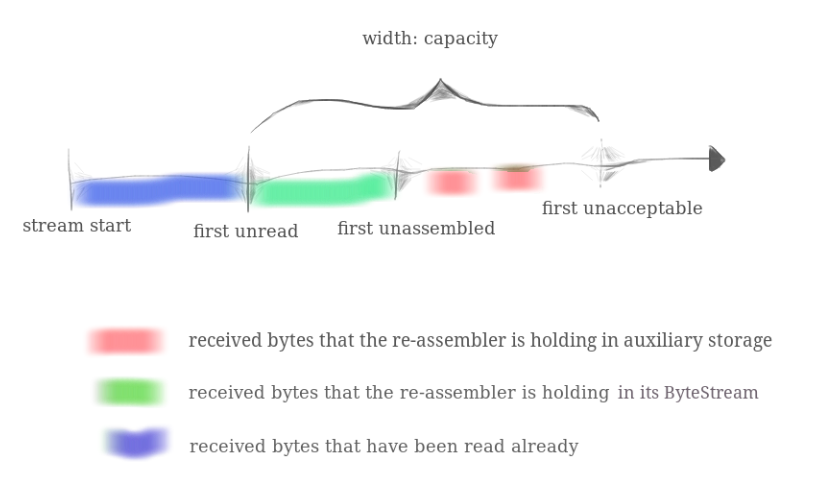

本 lab 要求在 lab0 的基础上实现一个字节流整合器。

lab1 ~ lab4 均围绕此图进行。在 lab0
中，我们实现了有序字节流，而事实上真实的网络并不会按顺序向我们发送数据包，我们需要利用一个整合器将收到的无序字节流片段以正确顺序拼接并写到
ByteStream 中。数据包以 {data, index}
的形式被接收，其中 data 为
std::string，index 为 data
作为子串在原始字节流中的下标，如
1 | 1 2 |
一旦整合器收到了正确的数据包（需要我们维护一个
next_index），它就会将其写入
ByteStream；而那些顺序错乱的，整合器会将其缓存，但丢弃那些超过
capacity 的部分。关于 capacity，guide
里有了一个比较明确的介绍：

即
ByteStream中未读取的部分加上Reassembler中无序的部分大小不能超过capacity。
一些注意事项都写在 FAQ 里了：
- 整个流中第一个字节的索引是什么？0。
- 实施效率应该如何？请不要构建空间或时间效率极低的数据结构，该数据结构将成为您的 TCP 实现的基础。每个 Lab1 测试都应在不到半秒的时间内完成。
- 应该如何处理不一致的子串？可以认为它们不存在，即假设存在一个唯一的底层字节流，并且所有子字符串都是它确定的切片。
- 可以用什么？您可以使用您认为有用的标准库的任何部分，最好至少使用一种数据结构。
- 什么时候应该将字节写入
ByteStream？尽快。一个字节不应该出现在ByteStream中的唯一情况是它前面存在未被 "pushed" 的字节。 - 提供给
push_substring()函数的子串是否会发生重叠？是的。 - 需要向
StreamReassembler添加私有成员吗？是的。子串可能以任何顺序到达，因此您的数据结构必须“记住”这些子串，直到它们准备好放入ByteStream中，即直到它们之前的所有索引都被写入ByteStream。 - 整合器可以存储重叠的子字符串吗？不。这样做破坏了
capacity的限制。
数据结构设计
我们的数据结构应当具有以下功能：
- 支持频繁的头部删除操作，因为要将有序部分尽快写入
ByteStream； - 支持随机访问，因为到达的字符串可能出现在任何索引处；
- 支持去重操作，即如果收到了
{"bcd", 1}, {"cde", 2}这样的包，我们应仅缓存四个字符"bcde"；
不难发现，lab0 中 ByteStream
的实现已经为我们提供了一个良好的思路——循环队列！如果用数组实现循环队列，并且每个位置存放的是单个字符，则上面的功能都能完美实现。
但此处的循环队列与 lab0 中稍有不同：
Reassembler的容量为capacity - ByteStream.buffer_size()，所以我舍弃了双指针，仅用一个head来标识队列头部；- 正如之前所说，
Reassembler需要维护一个next_index，而事实上head所指向的队列头部正是下一个要写入的字符，即head与next_index存在对应关系（只不过head表示的是循环队列的数组下标，而next_index表示字符在流中的索引），则得到流索引i在循环队列中的数组下标为(i - next_index + head) % (capacity + 1)；
收到
{"bcd", 1}后我们的队列大概如下所示:
2
3
4
5
6
7
+-+-+-+-+-+-+...+-+-+
|/|b|c|d|/|/|...|/|/| // '/' 表示当前位置为空
+-+-+-+-+-+-+...+-+-+
↑
head之后再收到
{"cde", 2}，则队列变为：
2
3
4
5
6
7
+-+-+-+-+-+-+...+-+-+
|/|b|c|d|e|/|...|/|/|
+-+-+-+-+-+-+...+-+-+
↑
head一旦收到
{"a", 0}，就可以将所有字符写到ByteStream里了
2
3
4
5
6
7
8
9
10
11
12
13
14
15
16
+-+-+-+-+-+-+...+-+-+
|a|b|c|d|e|/|...|/|/|
+-+-+-+-+-+-+...+-+-+
↑
head
||
\/
+-+-+-+-+-+-+...+-+-+
|/|/|/|/|/|/|...|/|/|
+-+-+-+-+-+-+...+-+-+
↑
head
需要注意的是，收到的子串并非每个字符都要写入，我们要写入的部分应为
[max(index, next_index), min(next_index + capacity - ByteStream.buffer_size(), index + data.length())]
这样就能忽略已写入 ByteStream 的部分以及超出
capacity 的部分。
上面的索引为流索引，还需要转换为数组下标。
还有一个坑点在于如何表示队列中某个位置为空。之前本来想节省内存，将
'\0' 表示为空位，但发现有个测试点会将 0~255
都写进来，故为了可读性，选择开了第二个数组
std::vector<bool> _valid(capacity + 1)，false
表示空位，true 同理。
部分代码如下所示：
1 | void StreamReassembler::push_substring(const string &data, const size_t index, |
执行下列命令，进行测试：
1 | $ cd build |
测试结果如下，通过。
1 | [100%] Testing the stream reassembler... |